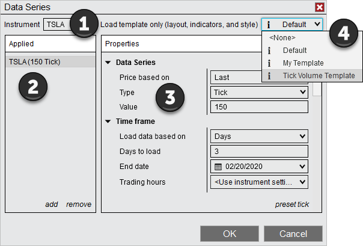
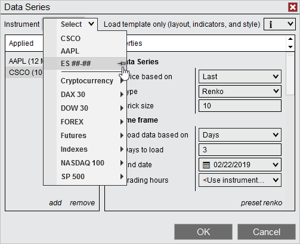
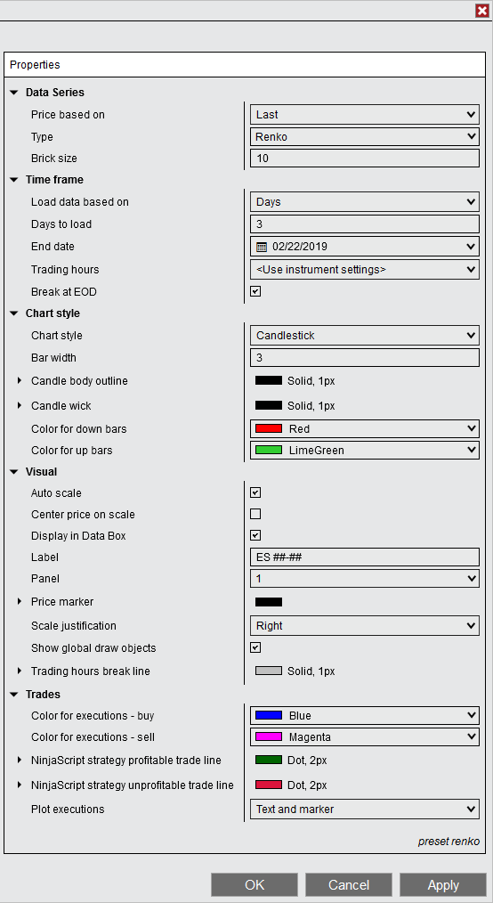
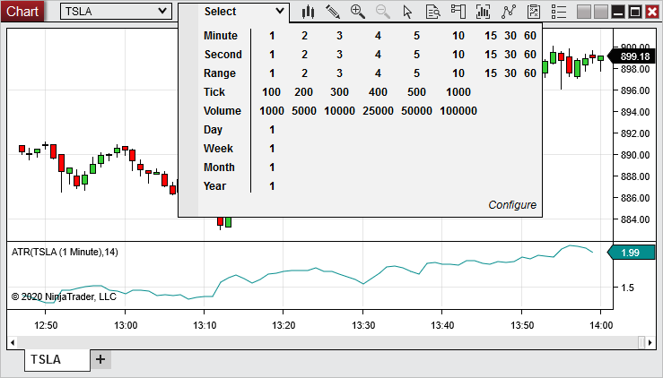
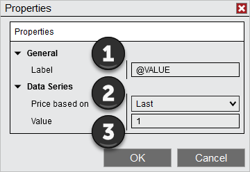
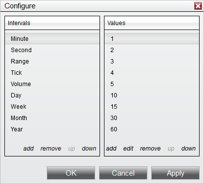
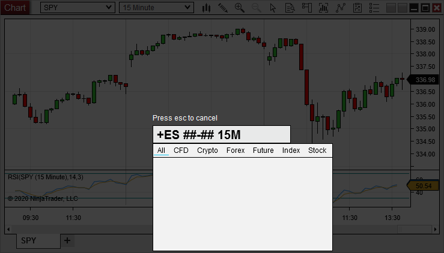

|
<< Click to Display Table of Contents >> Working with Price Data |


|
Working with Price Data
|
<< Click to Display Table of Contents >> Working with Price Data |
|
A Data Series represents a series of price data, which can be displayed on a chart using one of several Bar Types and Chart Styles. One or more Data Series will be applied to a new chart when it is created, and additional Data Series can be added, edited, or removed via the Data Series window.
 Understanding the Data Series Window
Understanding the Data Series Window
The Data Series window is used to configure the Data Series within a chart, edit Data Series parameters, and save default values for different Period Types.
Accessing the Data Series WindowThere are multiple ways to access the Data Series window:
•Select the New menu from the NinjaTrader Control Center, then select the Chart menu item. •Right mouse click in the chart background and select the Data Series menu item. •Use the default CTRL+F Hot Key from an open chart. •Double left mouse click on a Data Series within the chart. •Right mouse click on a selected Data Series within a chart, then select the Properties menu item.
Sections of the Data Series WindowThe image below displays the four sections of the Data Series window.  1.Instrument Selector 2.Data Series currently applied to the chart 3.Selected Data Series' parameters 4.Saved Chart Templates that can be applied to the new chart. See the Saving Chart Defaults and Templates page for more information.
|
Adding a Data Series Multiple Data Series objects can be applied within a single chart. A new panel is automatically created for each Data Series added, unless the "Panel" property is manually changed to an existing panel. There are multiple ways to add a Data Series to a chart using the Data Series window:
1.Use the Instrument Selector dropdown menu to select a recently used or pinned instrument, or any instrument in an Instrument List. 2.Type the instrument symbol (including the contract month for futures instruments) directly into the Instrument Selector, then press the "Enter" key. 3.Left mouse click on the magnifying glass icon next to the Instrument Selector. In the window that appears, use the search field to search available instruments by symbol or description, then double left mouse click on an instrument in the search results to add it to the list of applied Data Series.
The added Data Series will now be visible in the list in the "Applied" section, allowing you to change any parameters to desired values (see the "How to edit Data Series parameters" section below).

In the image above, we can use the Instrument Selector to add a recently viewed or pinned instrument, as well as any instruments in an Instrument List. |
 How to edit Data Series parameters
How to edit Data Series parameters
Editing a Data Series A Data Series object's parameters are available to configure within the Data Series window once it has been added to a chart (see the "How to add a Data Series" section above).
To edit Data Series parameters:
1.Open the Data Series window (see the "Understanding the Data Series window" section above). 2.Select the Data Series you would like to edit in the "Applied" section. 3.Once selected, the Data Series parameters will be available to edit on the right hand side.

Available Data Series parameters can be found in the list below: Data Series Parameters
Saving Data Series Parameters as DefaultYou can optionally save your customized Data Series parameters as default. Defaults are saved based on the Interval Type selected. Saving defaults will recall your customized settings the next time you add a Data Series with that specific Interval Type to a chart. Please see the Saving Chart Defaults and Templates page for more information. |
Data Series can be edited in several ways after being added to a chart.
Changing an Instrument via the Chart ToolbarTo change an instrument using the chart toolbar:
1.Left mouse click on the instrument drop down menu in the chart toolbar 2.Select a recent or pinned instrument from the top of the list, or expand any of the Instrument Lists for additional selections (for more information about editing Instrument Lists, see the Instrument Lists page).
Using the Interval SelectorThe Interval Selector can be used to change a Data Series interval directly from the chart toolbar. The Interval Selector comes pre-populated with commonly used intervals, but you can add additional intervals of your choice at any time. To access the Interval Selector, left mouse click the dropdown menu displaying the currently selected interval, located next to the instrument dropdown menu on the chart toolbar. To change the currently selected interval, select any of the values corresponding to the row labeled with your desired interval type. For example, to switch to a 5,000 Volume interval, click the "5000" option in the "Volume" row.

Adding Intervals to the Interval SelectorTo add a new interval to the Interval Selector, first click the Configure option. The Configure window that appears is separated into two sections. In the "Intervals" section on the left side, you can select any existing Interval Type to view, add, edit, or remove any specific interval value set up for that interval type. In this section, you can add new Interval Types to the list via the add option, remove an Interval Type from the list via the remove option, or move Interval Types higher or lower in the list via the up and down options. In addition to the Interval Types already available, you can add Heiken Ashi, Kagi, Line Break, Point and Figure, or Renko to the list.
With an Interval Type selected in the "Intervals" section, you can manage the specific intervals available for that type in the "Values" section. To add a specific interval to the list for a specific Interval Type, select the add option. A window will appear, in which you can set the label and Data Series options to be used when that interval is selected:

1. The "Label" field sets the label that will be displayed in the Interval Selector for this interval. Entering "@VALUE" in this field will display the value entered in the "Value" field in the section below. Alternatively, you can enter any text or numbers in this field to label the interval.
2. The "Price Based On" field determines whether the underlying Data Series will be based upon the Ask, Bid, or Last price for the selected instrument.
3. The "Value" field sets the value to be used for the interval, based on the Interval Type.
Editing, Sorting, and Removing IntervalsTo remove an interval from the list for a specific interval type, first select the interval, then select the remove option.
To edit the parameters of an existing interval, select the edit option instead.
To change the placement of an interval in the list, first select the interval you wish to move, then select the up or down options to move it higher or lower in the list. Moving an interval higher in the list will cause it to be displayed further to the left in the Interval Selector, and moving it lower in the list will cause it to be displayed further to the right.

The Configure window pictured above allows the addition, removal, or editing of interval types and specific intervals in the Interval Selector.
Changing and Adding Instruments and Intervals with the KeyboardYou can change instruments or intervals by pressing a letter or number key in a selected chart. When a letter or number key is pressed, the Instrument Overlay appears. Within the Instrument Overlay, you can change the instrument, interval, or chart type by using the formats in the table below and pressing the "Enter" key when finished. If multiple instruments are displayed in the chart, you can change a specific instrument by left mouse clicking to select it before typing. If no instrument is selected, the primary instrument is changed.

|
Removing a Data Series There are three ways to remove a Data Series from your NinjaTrader chart:
•Open the Data Series window (see the "Understanding the Data Series window" section above). Select a Data Series from the "Applied" section, then select the Remove option, then press the OK button to close the Data Series window. •Left mouse click a Data Series on your chart to select it, then press the "Delete" button on your keyboard. •Left mouse click a Data Series on your chart to select it, then right mouse click the Data Series and select the Remove menu item.
If only one Data Series is applied to a chart, it cannot be removed. However, the original Data Series added to a chart can be removed if there is at least one other Data Series is still applied. |